뽑기
영웅 뽑기 풀 8종(Gacha_Scriptable), 아이템 뽑기 6종(Item_Gacha_Scriptable), 이벤트 뽑기 1종이 있습니다.
영웅 뽑기 풀
C_Gacha Count 30 · 대상 14명 · 확률 합 466.2%
| 번호 | 영웅 | 데이터 Chance | 실효 확률(%) |
|---|---|---|---|
| 0 | 알피아 | 33.3 | 7.14 |
| 1 | 벨라 | 33.3 | 7.14 |
| 2 | 네오 | 33.3 | 7.14 |
| 3 | 에드릭 | 33.3 | 7.14 |
| 4 | 아라 | 33.3 | 7.14 |
| 5 | 제로 | 33.3 | 7.14 |
| 6 | 드렉스 | 33.3 | 7.14 |
| 7 | 아스나 | 33.3 | 7.14 |
| 8 | 로더 | 33.3 | 7.14 |
| 9 | 알베도 | 33.3 | 7.14 |
| 10 | 네블 | 33.3 | 7.14 |
| 11 | 카이라 | 33.3 | 7.14 |
| 12 | VC-01 | 33.3 | 7.14 |
| 13 | 엘레나 | 33.3 | 7.14 |
1회 비용: 영웅 소환서 30개 · 지급 조각 20개 (1.13.14 UI_Gacha_Check.cs:110-124)
C_Gacha80 Count 80 · 대상 14명 · 확률 합 466.2%
| 번호 | 영웅 | 데이터 Chance | 실효 확률(%) |
|---|---|---|---|
| 0 | 알피아 | 33.3 | 7.14 |
| 1 | 벨라 | 33.3 | 7.14 |
| 2 | 네오 | 33.3 | 7.14 |
| 3 | 에드릭 | 33.3 | 7.14 |
| 4 | 아라 | 33.3 | 7.14 |
| 5 | 제로 | 33.3 | 7.14 |
| 6 | 드렉스 | 33.3 | 7.14 |
| 7 | 아스나 | 33.3 | 7.14 |
| 8 | 로더 | 33.3 | 7.14 |
| 9 | 알베도 | 33.3 | 7.14 |
| 10 | 네블 | 33.3 | 7.14 |
| 11 | 카이라 | 33.3 | 7.14 |
| 12 | VC-01 | 33.3 | 7.14 |
| 13 | 엘레나 | 33.3 | 7.14 |
1회 비용: 영웅 소환서 80개 · 지급 조각 50개 (1.13.14 UI_Gacha_Check.cs:110-124)
C_Gacha150 Count 150 · 대상 14명 · 확률 합 466.2%
| 번호 | 영웅 | 데이터 Chance | 실효 확률(%) |
|---|---|---|---|
| 0 | 알피아 | 33.3 | 7.14 |
| 1 | 벨라 | 33.3 | 7.14 |
| 2 | 네오 | 33.3 | 7.14 |
| 3 | 에드릭 | 33.3 | 7.14 |
| 4 | 아라 | 33.3 | 7.14 |
| 5 | 제로 | 33.3 | 7.14 |
| 6 | 드렉스 | 33.3 | 7.14 |
| 7 | 아스나 | 33.3 | 7.14 |
| 8 | 로더 | 33.3 | 7.14 |
| 9 | 알베도 | 33.3 | 7.14 |
| 10 | 네블 | 33.3 | 7.14 |
| 11 | 카이라 | 33.3 | 7.14 |
| 12 | VC-01 | 33.3 | 7.14 |
| 13 | 엘레나 | 33.3 | 7.14 |
1회 비용: 영웅 소환서 150개 · 지급 조각 100개 (1.13.14 UI_Gacha_Check.cs:110-124)
Hunter Count 200 · 대상 3명 · 확률 합 99.9%
| 번호 | 영웅 | 데이터 Chance | 실효 확률(%) |
|---|---|---|---|
| 7 | 아스나 | 33.3 | 33.33 |
| 8 | 로더 | 33.3 | 33.33 |
| 13 | 엘레나 | 33.3 | 33.33 |
1회 비용: 영웅 소환서 200개 · 지급 조각 100개 (1.13.14 UI_Gacha_Check.cs:110-124)
Mage Count 200 · 대상 3명 · 확률 합 99.9%
| 번호 | 영웅 | 데이터 Chance | 실효 확률(%) |
|---|---|---|---|
| 0 | 알피아 | 33.3 | 33.33 |
| 1 | 벨라 | 33.3 | 33.33 |
| 10 | 네블 | 33.3 | 33.33 |
1회 비용: 영웅 소환서 200개 · 지급 조각 100개 (1.13.14 UI_Gacha_Check.cs:110-124)
Warrior Count 200 · 대상 3명 · 확률 합 99.9%
| 번호 | 영웅 | 데이터 Chance | 실효 확률(%) |
|---|---|---|---|
| 2 | 네오 | 33.3 | 33.33 |
| 6 | 드렉스 | 33.3 | 33.33 |
| 11 | 카이라 | 33.3 | 33.33 |
1회 비용: 영웅 소환서 200개 · 지급 조각 100개 (1.13.14 UI_Gacha_Check.cs:110-124)
assassin Count 200 · 대상 2명 · 확률 합 6.6%
| 번호 | 영웅 | 데이터 Chance | 실효 확률(%) |
|---|---|---|---|
| 4 | 아라 | 3.3 | 50 |
| 5 | 제로 | 3.3 | 50 |
1회 비용: 영웅 소환서 200개 · 지급 조각 100개 (1.13.14 UI_Gacha_Check.cs:110-124)
paladin Count 200 · 대상 3명 · 확률 합 9.9%
| 번호 | 영웅 | 데이터 Chance | 실효 확률(%) |
|---|---|---|---|
| 3 | 에드릭 | 3.3 | 33.33 |
| 9 | 알베도 | 3.3 | 33.33 |
| 12 | VC-01 | 3.3 | 33.33 |
1회 비용: 영웅 소환서 200개 · 지급 조각 100개 (1.13.14 UI_Gacha_Check.cs:110-124)
Count는 뽑기 1회에 쓰는 영웅 소환서 수입니다(Gacha_Scriptable.Number가 가리키는 O_Item × Count, 1.13.14 코드).
아이템 뽑기
C_Add_On Count 20 · 항목 10
| 풀 | 아이템 | 등급 | Chance(항목별 독립 판정) | |
|---|---|---|---|---|
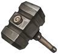 | Rare | 망치 | R | 80 |
| Rare | 해골 | R | 80 | |
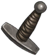 | Rare | 검 손잡이 | R | 80 |
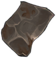 | Rare | 고철 | R | 80 |
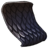 | Rare | 비늘 | R | 80 |
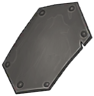 | Rare | 금속 판 | R | 80 |
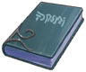 | Rare | 하급 제작서 | R | 80 |
| Rare | 고급스틱 | R | 80 | |
| Rare | 은 조각 | R | 80 | |
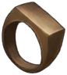 | Rare | 반지조각 | R | 80 |
I_100_Gacha Count 70 · 항목 42
| 풀 | 아이템 | 등급 | Chance(항목별 독립 판정) | |
|---|---|---|---|---|
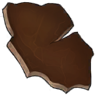 | Common | 가죽 | C | 50 |
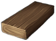 | Common | 나무조각 | C | 50 |
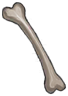 | Common | 뼈 | C | 50 |
| Common | 못 | C | 50 | |
| Common | 송곳니 | C | 50 | |
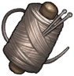 | Common | 실타래 | C | 50 |
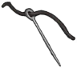 | Common | 바늘 | C | 50 |
| Rare | 망치 | R | 30 | |
| Rare | 해골 | R | 30 | |
| Rare | 검 손잡이 | R | 30 | |
| Rare | 고철 | R | 30 | |
| Rare | 비늘 | R | 30 | |
| Rare | 금속 판 | R | 30 | |
| Rare | 하급 제작서 | R | 30 | |
| Rare | 고급스틱 | R | 30 | |
| Rare | 은 조각 | R | 30 | |
| Rare | 반지조각 | R | 30 | |
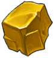 | Epic | 금 조각 | E | 9 |
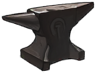 | Epic | 모루 | E | 9 |
| Epic | 최상급 스틱 | E | 9 | |
| Epic | 고급 제작서 | E | 9 | |
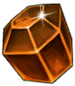 | Epic | 플레어 스톤 | E | 9 |
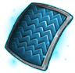 | Epic | 서광 섬유 | E | 9 |
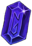 | Epic | 루나 스톤 | E | 9 |
| Epic | 실프 스톤 | E | 9 | |
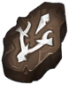 | Epic | 정수 조각 | E | 9 |
| Epic | 마법서 | E | 9 | |
| Legendary | 회복 각인 | RD | 0.4 | |
| Legendary | 라바 스톤 | RD | 0.4 | |
| Legendary | 흡수 각인 | RD | 0.4 | |
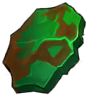 | Legendary | 녹수정 | RD | 0.4 |
| Legendary | 헌터 각인 | RD | 0.4 | |
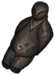 | Legendary | 봉인석 | RD | 0.4 |
| Legendary | 워리어 각인 | RD | 0.4 | |
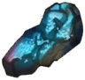 | Legendary | 청연석 | RD | 0.4 |
| Legendary | 어쌔신 각인 | RD | 0.4 | |
| Legendary | 용접기 | RD | 0.4 | |
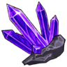 | Legendary | 차원석 | RD | 0.4 |
| Legendary | 메이지 각인 | RD | 0.4 | |
| Legendary | 최상급 마법서 | RD | 0.4 | |
| Legendary | 마력핵 | RD | 0.4 | |
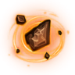 | Legendary | 팔라딘 각인 | RD | 0.4 |
I_Gacha Count 20 · 항목 42
| 풀 | 아이템 | 등급 | Chance(항목별 독립 판정) | |
|---|---|---|---|---|
| Common | 가죽 | C | 50 | |
| Common | 나무조각 | C | 50 | |
| Common | 뼈 | C | 50 | |
| Common | 못 | C | 50 | |
| Common | 송곳니 | C | 50 | |
| Common | 실타래 | C | 50 | |
| Common | 바늘 | C | 50 | |
| Rare | 망치 | R | 30 | |
| Rare | 해골 | R | 30 | |
| Rare | 검 손잡이 | R | 30 | |
| Rare | 고철 | R | 30 | |
| Rare | 비늘 | R | 30 | |
| Rare | 금속 판 | R | 30 | |
| Rare | 하급 제작서 | R | 30 | |
| Rare | 고급스틱 | R | 30 | |
| Rare | 은 조각 | R | 30 | |
| Rare | 반지조각 | R | 30 | |
| Epic | 금 조각 | E | 9 | |
| Epic | 모루 | E | 9 | |
| Epic | 최상급 스틱 | E | 9 | |
| Epic | 고급 제작서 | E | 9 | |
| Epic | 플레어 스톤 | E | 9 | |
| Epic | 서광 섬유 | E | 9 | |
| Epic | 루나 스톤 | E | 9 | |
| Epic | 실프 스톤 | E | 9 | |
| Epic | 정수 조각 | E | 9 | |
| Epic | 마법서 | E | 9 | |
| Legendary | 회복 각인 | RD | 0.4 | |
| Legendary | 라바 스톤 | RD | 0.4 | |
| Legendary | 흡수 각인 | RD | 0.4 | |
| Legendary | 녹수정 | RD | 0.4 | |
| Legendary | 헌터 각인 | RD | 0.4 | |
| Legendary | 봉인석 | RD | 0.4 | |
| Legendary | 워리어 각인 | RD | 0.4 | |
| Legendary | 청연석 | RD | 0.4 | |
| Legendary | 어쌔신 각인 | RD | 0.4 | |
| Legendary | 용접기 | RD | 0.4 | |
| Legendary | 차원석 | RD | 0.4 | |
| Legendary | 메이지 각인 | RD | 0.4 | |
| Legendary | 최상급 마법서 | RD | 0.4 | |
| Legendary | 마력핵 | RD | 0.4 | |
| Legendary | 팔라딘 각인 | RD | 0.4 |
Add_On Count 20 · 항목 33
| 풀 | 아이템 | 등급 | Chance(항목별 독립 판정) | |
|---|---|---|---|---|
| Rare | 망치 | R | 80 | |
| Rare | 해골 | R | 80 | |
| Rare | 검 손잡이 | R | 80 | |
| Rare | 고철 | R | 80 | |
| Rare | 비늘 | R | 80 | |
| Rare | 금속 판 | R | 80 | |
| Rare | 하급 제작서 | R | 80 | |
| Rare | 고급스틱 | R | 80 | |
| Rare | 은 조각 | R | 80 | |
| Rare | 반지조각 | R | 80 | |
| Epic | 금 조각 | E | 0.3 | |
| Epic | 모루 | E | 0.3 | |
| Epic | 최상급 스틱 | E | 0.3 | |
| Epic | 고급 제작서 | E | 0.3 | |
| Epic | 플레어 스톤 | E | 0.3 | |
| Epic | 서광 섬유 | E | 0.3 | |
| Epic | 루나 스톤 | E | 0.3 | |
| Epic | 실프 스톤 | E | 0.3 | |
| Epic | 정수 조각 | E | 0.3 | |
| Legendary | 회복 각인 | RD | 0.08 | |
| Legendary | 라바 스톤 | RD | 0.08 | |
| Legendary | 흡수 각인 | RD | 0.08 | |
| Legendary | 녹수정 | RD | 0.08 | |
| Legendary | 헌터 각인 | RD | 0.08 | |
| Legendary | 봉인석 | RD | 0.08 | |
| Legendary | 워리어 각인 | RD | 0.08 | |
| Legendary | 청연석 | RD | 0.08 | |
| Legendary | 어쌔신 각인 | RD | 0.08 | |
| Legendary | 용접기 | RD | 0.08 | |
| Legendary | 차원석 | RD | 0.08 | |
| Legendary | 메이지 각인 | RD | 0.08 | |
| Legendary | 마력핵 | RD | 0.08 | |
| Legendary | 팔라딘 각인 | RD | 0.08 |
R_Add_On Count 20 · 항목 10
| 풀 | 아이템 | 등급 | Chance(항목별 독립 판정) | |
|---|---|---|---|---|
| Epic | 금 조각 | E | 80 | |
| Epic | 모루 | E | 80 | |
| Epic | 최상급 스틱 | E | 80 | |
| Epic | 고급 제작서 | E | 80 | |
| Epic | 플레어 스톤 | E | 80 | |
| Epic | 서광 섬유 | E | 80 | |
| Epic | 루나 스톤 | E | 80 | |
| Epic | 실프 스톤 | E | 80 | |
| Epic | 정수 조각 | E | 80 | |
| Epic | 마법서 | E | 80 |
E_Add_On Count 20 · 항목 14
| 풀 | 아이템 | 등급 | Chance(항목별 독립 판정) | |
|---|---|---|---|---|
| Legendary | 회복 각인 | RD | 80 | |
| Legendary | 라바 스톤 | RD | 80 | |
| Legendary | 흡수 각인 | RD | 80 | |
| Legendary | 녹수정 | RD | 80 | |
| Legendary | 헌터 각인 | RD | 80 | |
| Legendary | 봉인석 | RD | 80 | |
| Legendary | 워리어 각인 | RD | 80 | |
| Legendary | 청연석 | RD | 80 | |
| Legendary | 어쌔신 각인 | RD | 80 | |
| Legendary | 용접기 | RD | 80 | |
| Legendary | 차원석 | RD | 80 | |
| Legendary | 메이지 각인 | RD | 80 | |
| Legendary | 마력핵 | RD | 80 | |
| Legendary | 팔라딘 각인 | RD | 80 |
이벤트 뽑기: Halloween
재료 14종 · 코스튬 1종 · 기타 3종
재료: 사탕, 젤리, 호박, 호박 조각, 라바 스톤, 가죽, 모루, 용접기, 헌터 각인, 메이지 각인, 팔라딘 각인, 성수, 마법서, 최상급 마법서
코스튬: 할로윈 벨라
기타: 대장장이의 눈물, 기록서, 전설 망치
원본: GachaEvent_Scriptable. 확률 값은 데이터에 없습니다.
뽑기 규칙 (1.13.14 소스 기준)
APK(1.14.0.1)는 IL2CPP라 메서드 본문이 없어서, 원본 저장소의 1.13.14 소스에서 규칙을 읽었습니다. 1.14에서 바뀌었을 수 있습니다.
| 시스템 | 규칙 | 값 | 근거 | |
|---|---|---|---|---|
| 가챠 | 영웅소환 조각 | Count30->20, 80->50, 150->100, 200->100 | UI/UI/#Gacha/UI_Gacha_Check.cs:110-124 | |
| 가챠 | 영웅소환 추첨 | rv=Random(0,100), Chance>=rv 중 최근접 = 누적 임계값 방식 | UI/UI/#Gacha/GachaSystem.cs:62,71 | |
| 가챠 | 실효확률 | (c_i - 직하 Chance)/max(Chance) | UI/UI/#Gacha/GachaSystem.cs:57-95 | 추정 |
| 가챠 | 천장 | 영웅소환·아이템상자 코드에 없음 | UI/UI/#Gacha/GachaSystem.cs; UI/UI/#Gacha/UI_Gacha_Check.cs | |
| 가챠 | 비용 재검증 | 서버 IVEN_DATA 재조회 후 차감 | UI/UI/#Gacha/UI_Gacha_Check.cs:70,109 | |
| 가챠 | 아이템상자 수량 | Count<50 -> 20개, >50 -> 80개 (==50 미동작) | UI/UI/#Gacha/UI_Gacha_Check.cs:190-196 | |
| 가챠 | 아이템상자 판정 | 항목 순회 Random<=Chance 반복 | UI/UI/#Gacha/Item_GachaSystem.cs:44-52 | |
| 가챠 | 이벤트 가챠 카테고리 | 코스튬0.5%, O_Item5%(2개), 나머지 아이템 | Mng/EVENT/GachaEVENT/GachaEvent.cs:13-14,199 | |
| 가챠 | 이벤트 가챠 등급 | C57 R23 E12 RD8 %, 수량 C10 R6 E4 RD2 | Mng/EVENT/GachaEVENT/GachaEvent.cs:19-22,227-231 |